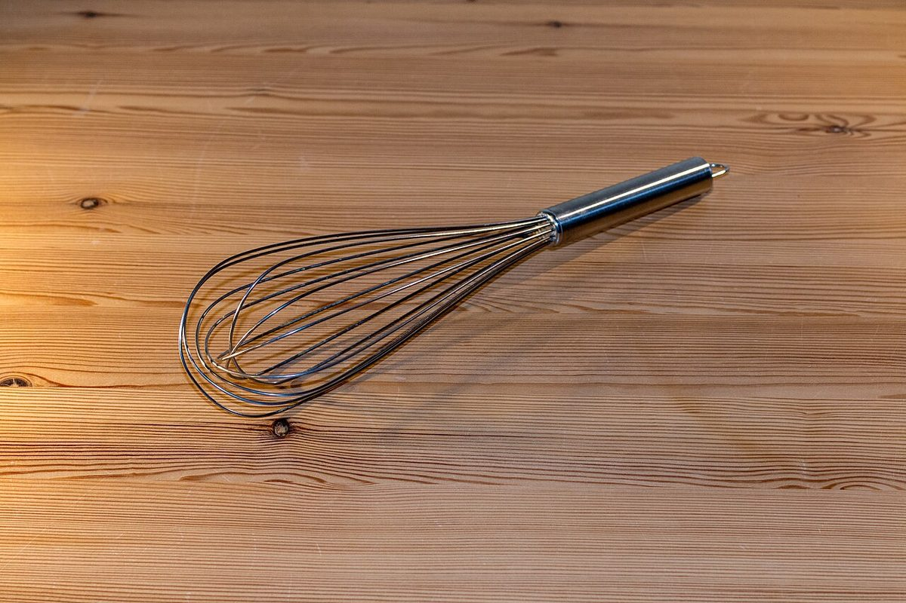
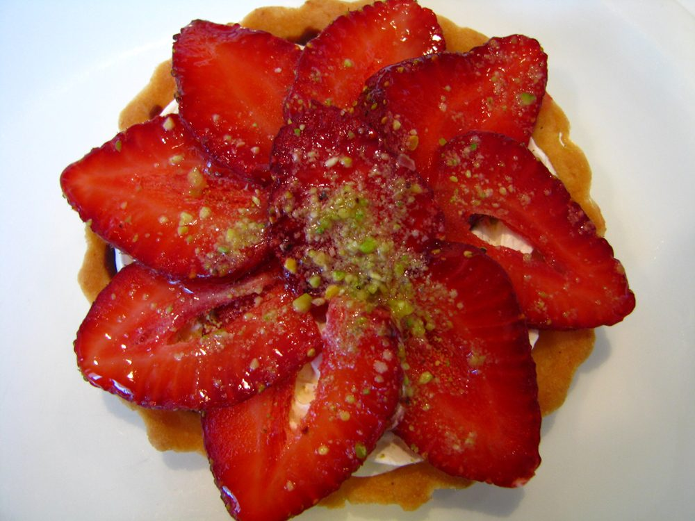
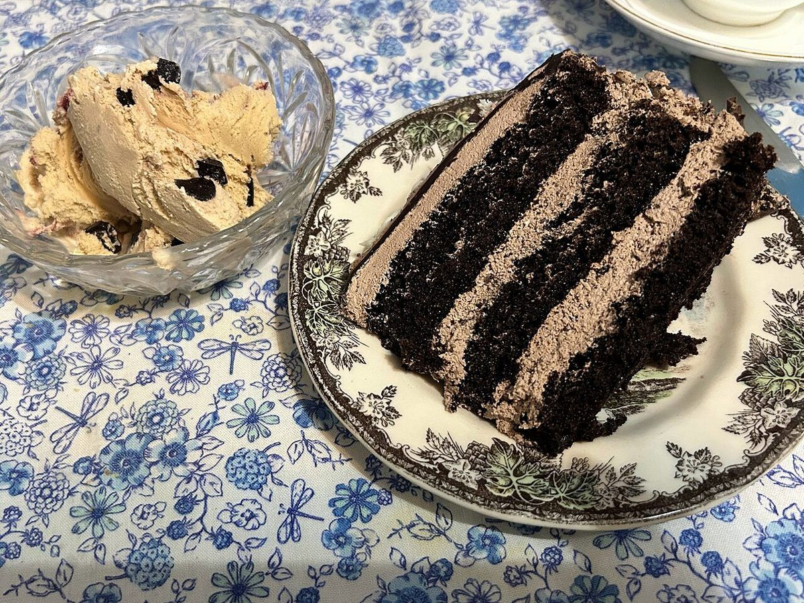
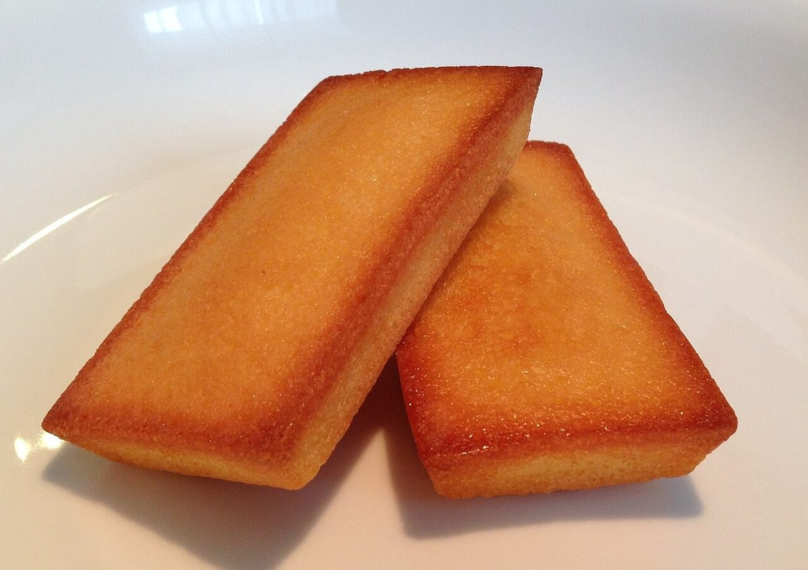
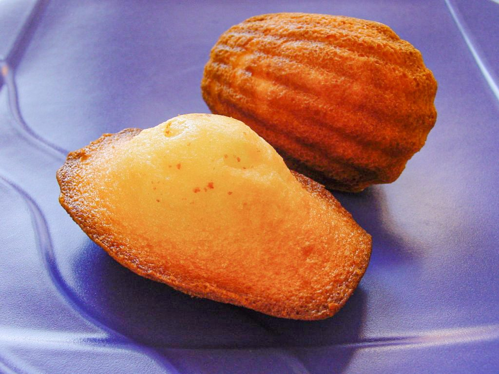

タルト
サクッとした生地と季節のフルーツ。
安心できる素材で、ひとくちごとにニコッとなれるお菓子を。
住宅街の中にある、小さなケーキ屋さんです。

ABOUT
店名の「niko labo(ニコラボ)」は、「みんなが安心して食べられて、ニコニコになる」ことから名付けられたと、取材記事で紹介されています。
安心・安全な食材を使い、老若男女を問わず、食べた人が幸せになり、笑顔になってほしい。そんな思いで日々ケーキを作っているとのことです。
このページは、その「ニコニコ」を軸に、制作側が想像で組み立てた試作ページです。

上の内容は公開されている取材記事に基づきます(出典は制作メモに記録)。最新の状況はInstagramでご確認ください。
SWEETS
お店で扱われているとされる種類のイメージです。実際の品揃え・価格・販売日は準備中(ご確認中)です。
サクッとした生地と季節のフルーツ。

苺の季節に出会えるかもしれない一品。

季節のフルーツのパフェが並ぶことも。

ひと切れでほっとする味わい。

甘いものが好きな日のごほうびに。

しっとり重なる層。

焼き菓子の定番。手みやげにも。

外はカリッと、中はもっちり。

バターの香りの小さな焼き菓子。

ちょっとした贈りものに。

色とりどりの小さな楽しみ。
写真はフリー素材のイメージで、店舗の実際の商品・様子ではありません。
VOICE
実在のお客様の声ではなく、制作側が作成した例文です。
住宅街の小さなお店で、ちょっと探検気分。ケーキを選ぶ時間がうれしいです。
ご来店のお客様(例)家族のお祝いに買って帰りました。やさしい甘さで、みんなニコニコでした。
ご来店のお客様(例)焼き菓子は手みやげにぴったり。ふだんのおやつにも買いたくなります。
ご来店のお客様(例)ACCESS
このページの写真はフリー素材のイメージで、店舗の実際の様子ではありません。